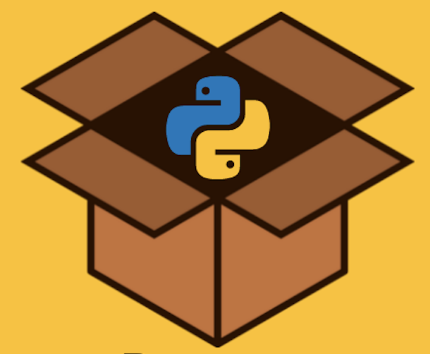

python -m pip install survey_toolsPython Package : survey_tools
Convenient tools for survey reseachers
Python
Software

Introduction
Having worked with survey data for over 6 years, I wanted to put a few simple tools into a python package others could use. Some of these tools were inspired by functions in R, some were used in previous places of employment, and some of these tools were to smooth over my personal pain points.
On 15 August 2024, I published the first official release on PyPI and github for survey_tools. Stars, feedback, and contributions welcome!
Quick Vignette
Installation
First, let’s install the package! In your terminal, you can easily install survey_tools through pip.
Import Packages + Load In Data
For our purposes here, I’ll load in a survey data set that I have worked on in the past called the American Family Survey which is publically available.
import pandas as pd
import numpy as np
import survey_tools as st
link = 'https://csed.byu.edu/00000183-a4c5-d2da-abe3-feed7be30001/2021data'
data = pd.read_stata(link)
print(data.shape)
data.head()(3000, 413)| caseid | weight | PAR006_treat | FAMTAX007_treat | s21_MSC001 | s21_MSC003 | s21_MSC003_b_1 | s21_MSC003_b_2 | s21_MSC003_b_3 | s21_MSC003_c | ... | votereg | ideo5 | newsint | religpew | pew_churatd | pew_bornagain | pew_religimp | pew_prayer | starttime | endtime | |
|---|---|---|---|---|---|---|---|---|---|---|---|---|---|---|---|---|---|---|---|---|---|
| 0 | 1492039695 | 0.698217 | Show rows: The coronavirus pandemic and Racial... | Treatment 1 ("pull parents away") | Not currently in a committed relationship | NaN | not selected | not selected | selected | NaN | ... | Yes | Very liberal | Most of the time | Protestant | Once a week | No | Very important | Once a day | 1.940257e+12 | 1.940258e+12 |
| 1 | 1492042119 | 1.195809 | Show rows: The coronavirus pandemic and Racial... | Treatment 2 ("encourage poverty") | Not currently in a committed relationship | NaN | selected | not selected | not selected | 2005 | ... | Yes | Conservative | Most of the time | Roman Catholic | Never | No | Somewhat important | Seldom | 1.940257e+12 | 1.940258e+12 |
| 2 | 1492870805 | 1.155043 | Show rows: The coronavirus pandemic and Racial... | Control | Married | 7 years | not selected | not selected | selected | NaN | ... | Yes | Moderate | Don't know | Nothing in particular | Never | No | Not at all important | Never | 1.940258e+12 | 1.940258e+12 |
| 3 | 1492850287 | 0.771161 | No extra rows on PAR006 | Treatment 2 ("encourage poverty") | Not currently in a committed relationship | NaN | not selected | selected | not selected | NaN | ... | Yes | Moderate | Most of the time | Roman Catholic | Seldom | No | Somewhat important | A few times a week | 1.940257e+12 | 1.940258e+12 |
| 4 | 1492863669 | 0.810394 | No extra rows on PAR006 | Treatment 1 ("pull parents away") | Currently in a committed relationship, but not... | NaN | selected | not selected | not selected | 2005 | ... | Don't know | Conservative | Some of the time | Nothing in particular | Seldom | No | Not at all important | A few times a week | 1.940257e+12 | 1.940258e+12 |
5 rows × 413 columns
get_names Function
Let’s try to find the education demographic variable
st.get_names(data, r'[Ee][Dd]')['s21_EMP005_fed',
's21_ED002',
's21_ED004',
's21_ED004_a',
's21_ED005_1',
's21_ED005_2',
's21_ED005_3',
's21_ED005_4',
's21_ED006_1',
's21_ED006_2',
's21_ED006_3',
's21_ED006_4',
's21_ED006_5',
's21_ED006_6',
's21_ED006_7',
's21_ED006_8',
's21_ED006_9',
's21_ED006_10',
's21_ED007_1',
's21_ED007_2',
's21_ED007_3',
's21_ED007_4',
's21_ED008',
's21_ED009',
's21_ED010_1',
's21_ED010_2',
's21_ED010_3',
's21_ED010_4',
's21_ED011_1',
's21_ED011_2',
's21_ED011_3',
's21_ED011_4',
'educ']Looks like we have several variables with ED, but there is an educ variables which is likely what we’re after. This function is useful in selecting groups of variables based on regex for easier manipulation of data.
tabs Function for 1-way Summary
Let’s run a quick summary of this variable.
st.tabs(data, 'educ', dropna=False)No HS 137
High school graduate 924
Some college 619
2-year 334
4-year 615
Post-grad 371
NaN 0
dtype: int64This looks like what we are interested in. Note that NaN is included at the bottom of the table since we specified dropna=False showing up that there are no missing values for this variable.
Note how we can also specify weights with the wts argument
st.tabs(data, 'educ', dropna=False, wts="weight")No HS 238.012949
High school graduate 929.096289
Some college 597.860835
2-year 320.430679
4-year 575.119248
Post-grad 339.480000
NaN 0.000000
dtype: float64We can now see these as weighted counts. If you want to see them as percentages just specify it! In this case, we want to convert to percents column-wise
st.tabs(data, 'educ', dropna=False, wts="weight", display='column')No HS 7.9
High school graduate 31.0
Some college 19.9
2-year 10.7
4-year 19.2
Post-grad 11.3
NaN 0.0
dtype: float64recode Function
I want to collapse these groups into two categories: No Bachelor’s Degree vs. Bachelors or Higher.
data['educ_rc'] = st.recode(
data,
'educ',
'"No HS"=0;'\
'"High school graduate"=0;'\
'"Some college"=0;'\
'"2-year"=0;'\
'"4-year"=1;'\
'"Post-grad"=1;'\
)
st.tabs(data, 'educ_rc')/Library/Frameworks/Python.framework/Versions/3.11/lib/python3.11/site-packages/survey_tools.py:266: UserWarning:
Column dtype changed from CATEGORY to CATEGORY.
0 2014
1 986
dtype: int64Typically, the survey data I work with is represented by numbers for answers instead of strings. The recode function is much more convenient in this case (see below).
data['educ_numbers'] = data.educ.cat.codes
data['educ_rc'] = st.recode(
data,
'educ_numbers',
'0:3="No B";4:5="B+"'
)
st.tabs(data, 'educ_rc')/Library/Frameworks/Python.framework/Versions/3.11/lib/python3.11/site-packages/survey_tools.py:266: UserWarning:
Column dtype changed from INT8 to OBJECT.
No B 2014
B+ 986
dtype: int64
Tip
The recode function has a few special keywords. For example, lo finds the lowest number e.g. lo:10=1 and hi works the opposite way. Also, NaN is a key word selecting or setting missing values in your variables e.g NaN=3
I’ll quickly recode another variable, so we can compare.
data['newsint'] = data.newsint.cat.codes
data['newsint_rc'] = st.recode(data, 'newsint', "0='High';1:5='Low'")
st.tabs(data, 'newsint_rc')/Library/Frameworks/Python.framework/Versions/3.11/lib/python3.11/site-packages/survey_tools.py:266: UserWarning:
Column dtype changed from INT8 to OBJECT.
High 1510
Low 1490
dtype: int64tabs Function for 2-way Tabulation
Let’s look at a crosstab break of news interest by education.
st.tabs(data, 'newsint_rc', 'educ_rc', wts = "weight", display='column')| No B | B+ | |
|---|---|---|
| High | 42.7 | 61.8 |
| Low | 57.3 | 38.2 |
From this, we can see those with a bachelor’s degree or higher are more interested in the news than those without.
Tip
Using the display argument, we could also summarize by row or cell
rake_weight Function
This survey data is already weighted in the weight column we’ve been using, but if your data isn’t already weighted use the rake_weight function.
I’ll show a simple example below.
data['age'] = 2021 - data.birthyr
data['age_rc'] = st.recode(data, 'age', '0:30=1;31:45=2;46:65=3;66:120=4')
st.tabs(data, 'age_rc', display='column')3 35.1
2 26.8
4 19.6
1 18.6
dtype: float64data['gender_rc'] = st.recode(data, 'gender', '"Male"=1;"Female"=2')
st.tabs(data, 'gender_rc', display='column')/Library/Frameworks/Python.framework/Versions/3.11/lib/python3.11/site-packages/survey_tools.py:266: UserWarning:
Column dtype changed from CATEGORY to CATEGORY.
1 46.8
2 53.2
dtype: float64Above you can see the unweighted tabulations of age and gender. Let’s weight them now.
true_props = pd.DataFrame({
'Names':['gender','gender','age_rc','age_rc','age_rc','age_rc',],
'Levels':['Male', 'Female',1,2,3,4],
'Proportions':[0.5,0.5,0.2,0.25,0.35,0.2],
})
data_w_new_wts = st.rake_weight(data, true_props, weight_nm='new_weight')Variable: gender
Male 50.0
Female 50.0
dtype: float64
Variable: age_rc
3 35.0
2 25.0
4 20.0
1 20.0
dtype: float64
Iterations: 1
Max Weight: 1.1487352180792596
Min Weight: 0.876682464644851
The rake_weight function outputs a few statistics like max weight, min weight, and iterations. You can also see the weighted tabs to see how well your weights match up. You can also disable the summary setting qa=False
As mentioned above, Stars, feedback, and contributions welcome for the survey_tools package!